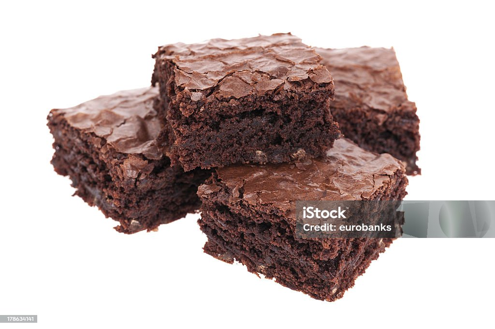

h1>Recipes

Description
This a recipe to make the best brownies ever!
Ingrediants
- 1 cup of white sugar
- 1/2 cup of butter, melted
- 1/2 cup of self rising flour
- 1/3 cup unsweetened cocoa powder
- 1/4 teaspoon of salt
- 1/2 cup of chopped walnuts
Steps
- preheat oven to 350 degress
- grease and flour an 8x8 or 9x9 inch baking pan
- Beat together sugar and butter in a medium bowl. Add eggs and mix well. Mix in vanilla then stir in walnuts. Spread evenly into the prepared pan
- bake into the preheat oven until eggs are firm, 25 to 30 muns.
- Cool before cutting into squares.